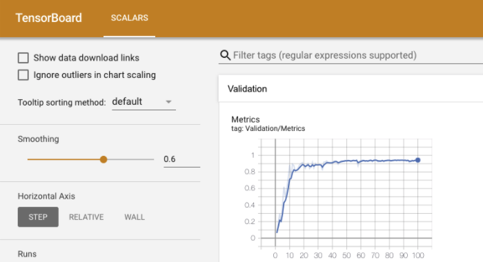
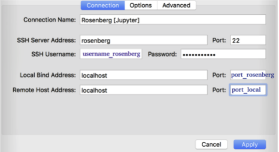

GPU Clusters
Page Contents
GPU Clusters¶
This document is being ported from here.
Neuropoly has several GPUs available for training deep learning models.
bireli.neuro.polymtl.ca- 2 x GeForce GTX TITAN X (released 2014)rosenberg.neuro.polymtl.ca- 8 x Tesla P100 SXM2 16GB (released 2016)romane.neuro.polymtl.ca- 4 x RTX A6000 (released 2020)
We have spent money and time on this infrastructure for it to push science forward, so please take advantage of it!
Connecting¶
Like other machines, connect with ssh using your polygrames account.
Hardware¶
You can inspect the available GPUs on machine, and their current state, with nvidia-smi:
u918374@rosenberg:~$ nvidia-smi
Fri Jun 4 01:26:14 2021
+-----------------------------------------------------------------------------+
| NVIDIA-SMI 440.33.01 Driver Version: 440.33.01 CUDA Version: 10.2 |
|-------------------------------+----------------------+----------------------+
| GPU Name Persistence-M| Bus-Id Disp.A | Volatile Uncorr. ECC |
| Fan Temp Perf Pwr:Usage/Cap| Memory-Usage | GPU-Util Compute M. |
|===============================+======================+======================|
| 0 Tesla P100-SXM2... On | 00000000:04:00.0 Off | 0 |
| N/A 25C P0 33W / 300W | 10MiB / 16280MiB | 0% Default |
+-------------------------------+----------------------+----------------------+
| 1 Tesla P100-SXM2... On | 00000000:05:00.0 Off | 0 |
| N/A 22C P0 33W / 300W | 10MiB / 16280MiB | 0% Default |
+-------------------------------+----------------------+----------------------+
| 2 Tesla P100-SXM2... On | 00000000:09:00.0 Off | 0 |
| N/A 24C P0 31W / 300W | 10MiB / 16280MiB | 0% Default |
+-------------------------------+----------------------+----------------------+
| 3 Tesla P100-SXM2... On | 00000000:0A:00.0 Off | 0 |
| N/A 23C P0 31W / 300W | 10MiB / 16280MiB | 0% Default |
+-------------------------------+----------------------+----------------------+
| 4 Tesla P100-SXM2... On | 00000000:85:00.0 Off | 0 |
| N/A 31C P0 51W / 300W | 10253MiB / 16280MiB | 0% Default |
+-------------------------------+----------------------+----------------------+
| 5 Tesla P100-SXM2... On | 00000000:86:00.0 Off | 0 |
| N/A 22C P0 41W / 300W | 10253MiB / 16280MiB | 0% Default |
+-------------------------------+----------------------+----------------------+
| 6 Tesla P100-SXM2... On | 00000000:89:00.0 Off | 0 |
| N/A 32C P0 51W / 300W | 10245MiB / 16280MiB | 0% Default |
+-------------------------------+----------------------+----------------------+
| 7 Tesla P100-SXM2... On | 00000000:8A:00.0 Off | 0 |
| N/A 38C P0 52W / 300W | 13684MiB / 16280MiB | 0% Default |
+-------------------------------+----------------------+----------------------+
+-----------------------------------------------------------------------------+
| Processes: GPU Memory |
| GPU PID Type Process name Usage |
|=============================================================================|
| 4 32263 C ...L.CA/u12345/venv-ivadomed/bin/python3.6 10243MiB |
| 5 32264 C ...L.CA/u12345/venv-ivadomed/bin/python3.6 10243MiB |
| 6 33062 C ...L.CA/u12345/venv-ivadomed/bin/python3.6 10235MiB |
| 7 33063 C ...L.CA/u12345/venv-ivadomed/bin/python3.6 10235MiB |
| 7 35147 C ...L.CA/u12345/venv-ivadomed/bin/python3.6 3439MiB |
+-----------------------------------------------------------------------------+
Software¶
Both tensorflow and torch are supported on all of these machines.
You can …
To get your software onto these servers, download it with git clone.
GPU-Agnostic code¶
For the benefit of being able to test code out locally, without the GPU servers, it’s helpful to write device-agnostic code, code that falls back to running on slower CPU emulation if GPUs are not available.
For tensorflow, this
For pytorch, this looks like this
device = torch.device('cuda' if torch.cuda.is_available() else 'cpu')
...
# to make tensors
X = torch.empty((8, 42), device=device)
# to make neural networks
model = Network(...).to(device=device)
Data¶
As with the other stations, you should prefer getting data in via git-annex, but you can it via duke (which is available to you at ~/duke/temp) or any other method (scp, curl, wget, etc).
Storage¶
Long term, slow access (with backup)¶
For projects and permanent storage: ~/duke
Warning
Please, do not use space on duke while training your models. If you need more local space, post a request on slack #computers.
Mid-term, rapid access (no backup)¶
This corresponds to your home ~/. This is where you keep your software (conda envs, virtualenvs, etc.).
Short-term, very rapid access (no backup)¶
This is where you run your experiments (eg: deep learning training). On rosenberg, go to ~/data_nvme_$USERor ~/data_extrassd_$USER. On bireli and romane , go to your home ~/ .
To keep track of your disk space, you can run df:
u108545@rosenberg:~$ # to see how much space is available on the spare disk
u108545@rosenberg:~$ df -h data_extrassd_u108545
Filesystem Size Used Avail Use% Mounted on
/dev/sdb1 440G 50G 368G 12% /mnt/extrassd
u108545@rosenberg:~$ # to measure how much space a tool takes
u108545@rosenberg:~$ du -hs data_extrassd_u108545/miniconda3/
18G data_extrassd_u108545/miniconda3/
Good Training Habits¶
Instead of loading the whole dataset to memory:
Use HDF5Matrix: https://gist.github.com/jfsantos/e2ef822c744357a4ed16ec0c885100a3
Provide a python generator like in: https://github.com/keras-team/keras/issues/107
And:
Store data as float32 rather than float64
Bookings¶
Please allocate your GPUs cooperatively on the computer resource calendar.
Warning
IMPORTANT: If you don’t have writing permission on this calendar please contact alexandrufoias@gmail.com.
Use this format: u918374@rosenberg:gpu[3].
Note that the GPUs are numbered from 0, as you can see in nvidia-smi.
To train, run your scripts like this:
u918374@rosenberg:~$ CUDA_VISIBLE_DEVICES="3" ./train.sh
You can book multiple GPUs just with commas: u918374@rosenberg:gpu[2,3,5]
and use them with
u918374@rosenberg:~$ CUDA_VISIBLE_DEVICES="2,3,5" ./train.sh
Monitoring¶
You can monitor what the system is doing with
htop # CPU processes
and
nvtop # GPU processes
You can see how hot it is running with
u918374@rosenberg:~$ sensors
coretemp-isa-0001
Adapter: ISA adapter
Package id 1: +30.0°C (high = +80.0°C, crit = +90.0°C)
Core 0: +25.0°C (high = +80.0°C, crit = +90.0°C)
Core 1: +25.0°C (high = +80.0°C, crit = +90.0°C)
You can see how hot its disks are running by finding out the name of the disk in /dev and running
u918374@rosenberg:~$ df -h .
Filesystem Size Used Avail Use% Mounted on
/dev/sda2 439G 412G 4.9G 99% /
u108545@rosenberg:~$ hddtemp /dev/sda2
/dev/sda2: PNY CS1311 480GB SSD: 30°C
You can also see all this information plotted over time for each machine at
https://monitor.neuro.polymtl.ca/host/bireli.neuro.polymtl.ca
https://monitor.neuro.polymtl.ca/host/rosenberg.neuro.polymtl.ca
https://monitor.neuro.polymtl.ca/host/romane.neuro.polymtl.ca
Monitoring GPUs¶
As above, you can see the computation amount, allocated RAM, temperature, fan speed of the GPUs on the command line with
nvidia-smi
or
nvtop
You can see the same information over time at
romaneGPU 0: https://monitor.neuro.polymtl.ca/host/romane.neuro.polymtl.ca/#menu_nvidia_smi_submenu_gpu0_RTX_A6000romaneGPU 1: https://monitor.neuro.polymtl.ca/host/romane.neuro.polymtl.ca/#menu_nvidia_smi_submenu_gpu1_RTX_A6000romaneGPU 2: https://monitor.neuro.polymtl.ca/host/romane.neuro.polymtl.ca/#menu_nvidia_smi_submenu_gpu2_RTX_A6000romaneGPU 3: https://monitor.neuro.polymtl.ca/host/romane.neuro.polymtl.ca/#menu_nvidia_smi_submenu_gpu3_RTX_A6000
Monitoring these metrics during training will help you make more efficient batch sizes and other optimizations.
Tensorboard¶

This feature allows you to monitor various training and validation metrics across epochs. If training is happening on a remote station (typically the case), you need to run tensorboard on the remote station and establish an SSH tunnel to be able to see the TensorBoard on your local browser.
To do on the remote GPU cluster:
Source virtual environment
Open a terminal session:
screen # If there is already a SINGLE screen session, reopen it: screen -dr # if there are more than one screen sessions, see which ones are active: screen -ls # Then select the one you like: screen -r PID
Launch tensorboard:
export TMPDIR=/tmp/$USER mkdir -p $TMPDIR tensorboard --logdir PATH_TO_MODEL --port PORTNUMBER
with:
PATH_TO_MODEL: Is the path to the folder that contains the file*.tfevents.*PORTNUMBER: Pick one number that is different from the port number that other people might be using on the same station. Examples: 6008, 6009, etc.
Create an SSH tunnelling between your local station and the remote server.
Open a browser and go to: http://localhost:8080/.
SSH tunnelling¶
If you want to run a Jupyter notebook from a remote server, or monitor a model training using tensorboard, you will need to do an SSH tunnelling to be able to pass the display from the remote cluster to your local station.
Install secure pipes and configure it as follows: with port_rosenber as the “Port” of the screen session and port_local is a random number (see screenshot below):

ssh -N -f -L localhost:8080:localhost:PORTNUMBER username@CLUSTER.neuro.polymtl.ca
Once the SSH tunnel is established, open a browser and go to: http://localhost:8080/.
Warning
If you get the following error:
bind: Address already in use
channel_setup_fwd_listener_tcpip: cannot listen to port: 8080
Could not request local forwarding.
You need to kill whatever application is using that port:
lsof -ti:8080 | xargs kill -9
Reference: https://fizzylogic.nl/2017/11/06/edit-jupyter-notebooks-over-ssh/